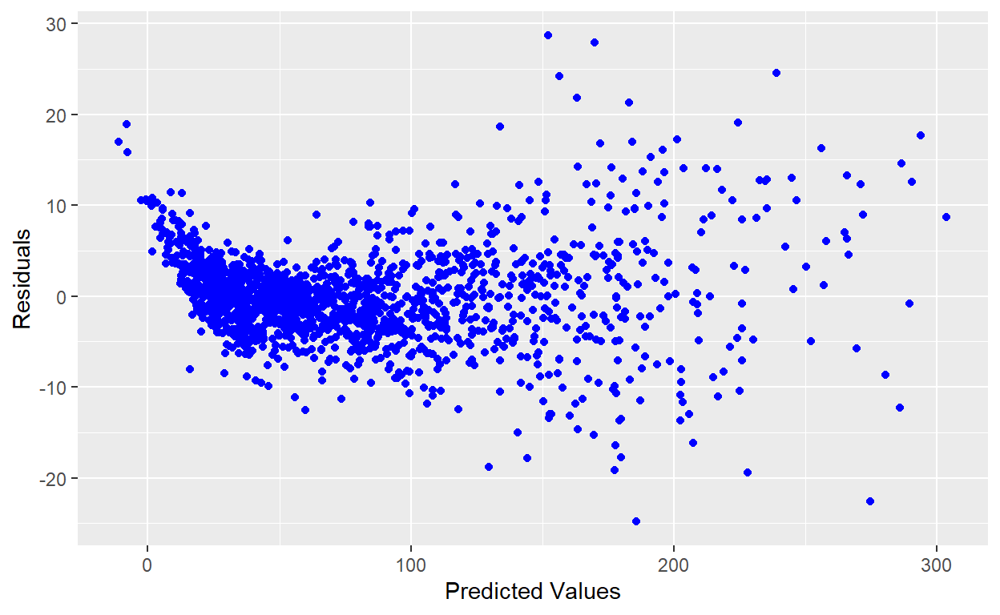
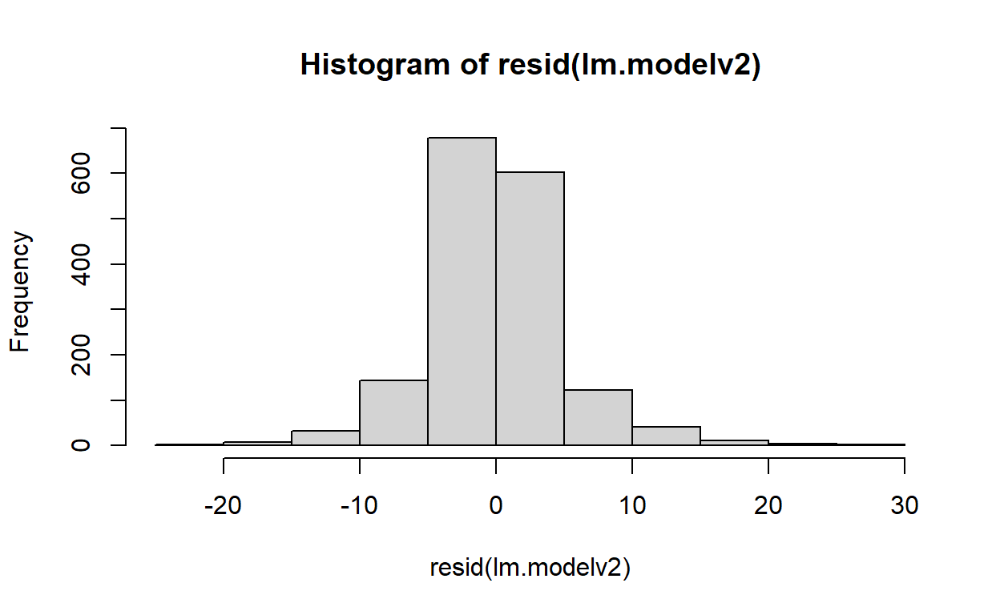
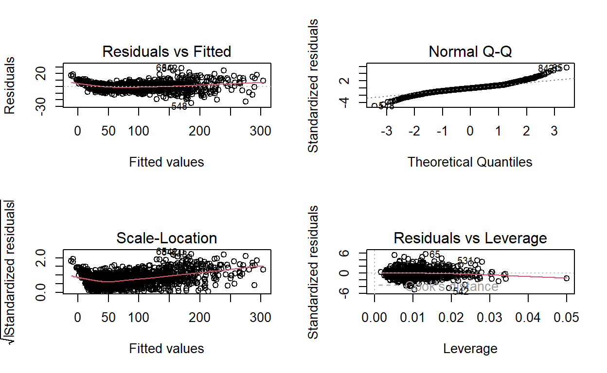

Exploring the relationship between certain stats and PFF grades for receiving
The beginning of my master’s program curriculum introduced linear regression as the introduction to model building. In practice, we were learning how to build this out in R, so it was exciting to progress in a new skill I came into the program looking to learn. This process timed well with the annual Fantasy Football Draft frenzy in August/September before the season begins. I’ve been playing for almost ten years and was excited to apply analytical skills to one of my many sports hobbies.
I understood my limitations with the predictions from a linear regression and, quite frankly, didn’t see the value in generating an ordered list of projected points for players, as that never seemed to help with decision-making in years past. “What if a few of your target players get drafted, how do you re-prioritize remaining players?” was the question in the back of my mind. So from my perspective, there was more value in identifying key relationships in specific stats to fantasy point output so that I could have a fluid evaluation tool throughout the entire Fantasy Draft. I was specifically interested in identifying key metrics to compare between wide receivers as this position group is obviously the most considerable amount of players to choose from out of all position groups, and they usually take up the most roster spots per team.
The data utilized was a graded receiving summary from PFF for 2014-2019, which has a mix of raw statistics from the respective year and the company’s graded data assessing performance (0-100), every play that’s aggregated to the game or season level. The next step was everyone’s favorite part, but definitely, the most crucial, and that was data cleaning. Teams’ locations change, players change names, and there are even players with the same name, so all needs to be accounted for before moving on from exploratory data analysis.
See the cleaned dataframe summary below that includes RBs, WRs, TEs:
'data.frame': 2946 obs. of 28 variables:
$ year : int 2014 2014 2014 2014 2014 2014 2014 2014 2014 2014 ...
$ player : chr "Antonio Brown" "Demaryius Thomas" "Julio Jones" "Jordy Nelson" ...
$ player_id : int 5718 5547 6158 4350 8663 1319 5606 4942 2278 5585 ...
$ position : chr "WR" "WR" "WR" "WR" ...
$ player_game_count : int 16 16 15 16 16 15 16 16 16 16 ...
$ team_name : chr "PIT" "DEN" "ATL" "GB" ...
$ targets : int 178 178 156 146 142 141 140 140 138 136 ...
$ receptions : int 129 111 104 98 73 85 101 85 70 99 ...
$ caught_percent : num 72.5 62.4 66.7 67.1 51.4 60.3 72.1 60.7 50.7 72.8 ...
$ yards : int 1698 1619 1593 1519 1008 936 1409 1318 1002 1331 ...
$ touchdowns : int 13 11 6 13 9 3 9 10 2 4 ...
$ grades_offense : num 91.2 89.9 89.8 89.4 73.5 75.3 87.9 80.6 75.7 79.3 ...
$ grades_pass_route : num 91.2 89.9 88 87.8 73.2 74.2 89.9 80.3 75.1 80.1 ...
$ grades_hands_drop : num 89.7 63.4 63.5 51.9 33.9 55.5 90.1 90.8 57.5 76.3 ...
$ grades_hands_fumble : num 72.5 84.4 34.8 85.2 49.6 24.8 61.8 83 48.1 59.8 ...
$ grades_pass_block : num NA NA NA NA NA NA NA NA NA NA ...
$ yards_per_reception : num 13.2 14.6 15.3 15.5 13.8 11 14 15.5 14.3 13.4 ...
$ yards_after_catch : int 615 668 553 519 177 383 381 511 159 709 ...
$ yards_after_catch_per_reception: num 4.8 6 5.3 5.3 2.4 4.5 3.8 6 2.3 7.2 ...
$ longest : int 63 86 79 80 51 35 48 72 50 73 ...
$ first_downs : int 86 69 76 71 52 49 69 56 51 58 ...
$ drops : int 5 9 8 8 11 9 2 1 7 6 ...
$ interceptions : int 3 6 4 1 3 3 2 7 6 3 ...
$ fumbles : int 1 0 2 0 1 3 1 0 1 1 ...
$ avoided_tackles : int 17 11 16 14 9 6 8 8 6 20 ...
$ targeted_qb_rating : num 119.5 98.5 102.3 128.2 86.8 ...
$ penalties : int 5 4 2 1 7 1 5 3 2 1 ...
$ declined_penalties : int 1 0 0 0 0 0 0 1 0 0 ...After my data manipulation step, I wanted to filter on players in the data with more than 15 targets. From there I created my target variable “Fantasy_WR_Total”:
'data.frame': 1648 obs. of 42 variables:
$ year : int 2014 2014 2014 2014 2014 2014 2014 2014 2014 2014 ...
$ player : chr "Antonio Brown" "Demaryius Thomas" "Julio Jones" "Jordy Nelson" ...
$ player_id.x : int 5718 5547 6158 4350 8663 1319 5606 4942 2278 5585 ...
$ position.x : chr "WR" "WR" "WR" "WR" ...
$ player_game_count : int 16 16 15 16 16 15 16 16 16 16 ...
$ team_name : chr "PIT" "DEN" "ATL" "GB" ...
$ targets : int 178 178 156 146 142 141 140 140 138 136 ...
$ receptions : int 129 111 104 98 73 85 101 85 70 99 ...
$ caught_percent : num 72.5 62.4 66.7 67.1 51.4 60.3 72.1 60.7 50.7 72.8 ...
$ yards : int 1698 1619 1593 1519 1008 936 1409 1318 1002 1331 ...
$ touchdowns : int 13 11 6 13 9 3 9 10 2 4 ...
$ grades_offense : num 91.2 89.9 89.8 89.4 73.5 75.3 87.9 80.6 75.7 79.3 ...
$ grades_pass_route : num 91.2 89.9 88 87.8 73.2 74.2 89.9 80.3 75.1 80.1 ...
$ grades_hands_drop : num 89.7 63.4 63.5 51.9 33.9 55.5 90.1 90.8 57.5 76.3 ...
$ grades_hands_fumble : num 72.5 84.4 34.8 85.2 49.6 24.8 61.8 83 48.1 59.8 ...
$ grades_pass_block : num NA NA NA NA NA NA NA NA NA NA ...
$ yards_per_reception : num 13.2 14.6 15.3 15.5 13.8 11 14 15.5 14.3 13.4 ...
$ yards_after_catch : int 615 668 553 519 177 383 381 511 159 709 ...
$ yards_after_catch_per_reception: num 4.8 6 5.3 5.3 2.4 4.5 3.8 6 2.3 7.2 ...
$ longest : int 63 86 79 80 51 35 48 72 50 73 ...
$ first_downs : int 86 69 76 71 52 49 69 56 51 58 ...
$ drops : int 5 9 8 8 11 9 2 1 7 6 ...
$ interceptions : int 3 6 4 1 3 3 2 7 6 3 ...
$ fumbles : int 1 0 2 0 1 3 1 0 1 1 ...
$ avoided_tackles : int 17 11 16 14 9 6 8 8 6 20 ...
$ targeted_qb_rating : num 119.5 98.5 102.3 128.2 86.8 ...
$ penalties : int 5 4 2 1 7 1 5 3 2 1 ...
$ declined_penalties : int 1 0 0 0 0 0 0 1 0 0 ...
$ season : int 2010 2010 2011 2008 2014 2003 2010 2009 2005 2010 ...
$ team : chr "PIT" "DEN" "ATL" "GB" ...
$ round : int 6 1 1 2 1 1 3 1 2 2 ...
$ pick : int 195 22 6 36 28 3 82 19 61 60 ...
$ pfr_id : chr "BrowAn04" "ThomDe03" "JoneJu02" "NelsJo00" ...
$ pfr_name : chr "Antonio Brown" "Demaryius Thomas" "Julio Jones" "Jordy Nelson" ...
$ player_id.y : chr NA NA NA NA ...
$ side : chr "O" "O" "O" "O" ...
$ category : chr "WR" "WR" "WR" "WR" ...
$ position.y : chr "WR" "WR" "WR" "WR" ...
$ Fantasy_WR_Yards : num 170 162 159 152 101 ...
$ Fantasy_WR_TDs : num 78 66 36 78 54 18 54 60 12 24 ...
$ Fantasy_WR_Rec : num 64.5 55.5 52 49 36.5 42.5 50.5 42.5 35 49.5 ...
$ Fantasy_WR_Total : num 312 283 247 279 191 ...I was curious how the offensive line performance impacted wide receiver fantasy production so I added PFF’s pass blocking efficiency grade to the data as another variable:
'data.frame': 1648 obs. of 50 variables:
$ year.x : int 2014 2014 2014 2014 2014 2014 2014 2014 2014 2014 ...
$ player : chr "Antonio Brown" "Demaryius Thomas" "Julio Jones" "Jordy Nelson" ...
$ player_id.x : int 5718 5547 6158 4350 8663 1319 5606 4942 2278 5585 ...
$ position.x : chr "WR" "WR" "WR" "WR" ...
$ player_game_count : int 16 16 15 16 16 15 16 16 16 16 ...
$ team_name.x : chr "PIT" "DEN" "ATL" "GB" ...
$ targets : int 178 178 156 146 142 141 140 140 138 136 ...
$ receptions : int 129 111 104 98 73 85 101 85 70 99 ...
$ caught_percent : num 72.5 62.4 66.7 67.1 51.4 60.3 72.1 60.7 50.7 72.8 ...
$ yards : int 1698 1619 1593 1519 1008 936 1409 1318 1002 1331 ...
$ touchdowns : int 13 11 6 13 9 3 9 10 2 4 ...
$ grades_offense : num 91.2 89.9 89.8 89.4 73.5 75.3 87.9 80.6 75.7 79.3 ...
$ grades_pass_route : num 91.2 89.9 88 87.8 73.2 74.2 89.9 80.3 75.1 80.1 ...
$ grades_hands_drop : num 89.7 63.4 63.5 51.9 33.9 55.5 90.1 90.8 57.5 76.3 ...
$ grades_hands_fumble : num 72.5 84.4 34.8 85.2 49.6 24.8 61.8 83 48.1 59.8 ...
$ grades_pass_block : num NA NA NA NA NA NA NA NA NA NA ...
$ yards_per_reception : num 13.2 14.6 15.3 15.5 13.8 11 14 15.5 14.3 13.4 ...
$ yards_after_catch : int 615 668 553 519 177 383 381 511 159 709 ...
$ yards_after_catch_per_reception: num 4.8 6 5.3 5.3 2.4 4.5 3.8 6 2.3 7.2 ...
$ longest : int 63 86 79 80 51 35 48 72 50 73 ...
$ first_downs : int 86 69 76 71 52 49 69 56 51 58 ...
$ drops : int 5 9 8 8 11 9 2 1 7 6 ...
$ interceptions : int 3 6 4 1 3 3 2 7 6 3 ...
$ fumbles : int 1 0 2 0 1 3 1 0 1 1 ...
$ avoided_tackles : int 17 11 16 14 9 6 8 8 6 20 ...
$ targeted_qb_rating : num 119.5 98.5 102.3 128.2 86.8 ...
$ penalties : int 5 4 2 1 7 1 5 3 2 1 ...
$ declined_penalties : int 1 0 0 0 0 0 0 1 0 0 ...
$ season : int 2010 2010 2011 2008 2014 2003 2010 2009 2005 2010 ...
$ team : chr "PIT" "DEN" "ATL" "GB" ...
$ round : int 6 1 1 2 1 1 3 1 2 2 ...
$ pick : int 195 22 6 36 28 3 82 19 61 60 ...
$ pfr_id : chr "BrowAn04" "ThomDe03" "JoneJu02" "NelsJo00" ...
$ pfr_name : chr "Antonio Brown" "Demaryius Thomas" "Julio Jones" "Jordy Nelson" ...
$ player_id.y : chr NA NA NA NA ...
$ side : chr "O" "O" "O" "O" ...
$ category : chr "WR" "WR" "WR" "WR" ...
$ position.y : chr "WR" "WR" "WR" "WR" ...
$ Fantasy_WR_Yards : num 170 162 159 152 101 ...
$ Fantasy_WR_TDs : num 78 66 36 78 54 18 54 60 12 24 ...
$ Fantasy_WR_Rec : num 64.5 55.5 52 49 36.5 42.5 50.5 42.5 35 49.5 ...
$ Fantasy_WR_Total : num 312 283 247 279 191 ...
$ year.y : int 2014 2014 2014 2014 2014 2014 2014 2014 2014 2014 ...
$ team_name.y : chr "PIT" "DEN" "ATL" "GB" ...
$ pass_snaps : int 643 624 682 595 619 545 624 673 603 662 ...
$ sacks_allowed : int 22 12 21 18 29 8 12 15 27 27 ...
$ hits_allowed : int 18 25 38 18 18 27 25 31 41 25 ...
$ hurries_allowed : int 106 74 141 76 132 107 74 115 118 121 ...
$ pressures_allowed : int 146 111 200 112 179 142 111 161 186 173 ...
$ pbe : num 86.9 90.1 83.8 89.1 83.2 86.2 90.1 86.9 82.3 84.9 ...Keeping just player ID and year with all the other numeric and graded fields, I was ready to test assumptions before model building. I’ll highlight the order of assumption testing below:
'data.frame': 1648 obs. of 16 variables:
$ year : int 2014 2014 2014 2014 2014 2014 2014 2014 2014 2014 ...
$ player_id.x : int 5718 5547 6158 4350 8663 1319 5606 4942 2278 5585 ...
$ player_game_count : int 16 16 15 16 16 15 16 16 16 16 ...
$ targets : int 178 178 156 146 142 141 140 140 138 136 ...
$ caught_percent : num 72.5 62.4 66.7 67.1 51.4 60.3 72.1 60.7 50.7 72.8 ...
$ touchdowns : int 13 11 6 13 9 3 9 10 2 4 ...
$ grades_offense : num 91.2 89.9 89.8 89.4 73.5 75.3 87.9 80.6 75.7 79.3 ...
$ grades_pass_route : num 91.2 89.9 88 87.8 73.2 74.2 89.9 80.3 75.1 80.1 ...
$ grades_hands_drop : num 89.7 63.4 63.5 51.9 33.9 55.5 90.1 90.8 57.5 76.3 ...
$ yards_per_reception : num 13.2 14.6 15.3 15.5 13.8 11 14 15.5 14.3 13.4 ...
$ yards_after_catch_per_reception: num 4.8 6 5.3 5.3 2.4 4.5 3.8 6 2.3 7.2 ...
$ first_downs : int 86 69 76 71 52 49 69 56 51 58 ...
$ avoided_tackles : int 17 11 16 14 9 6 8 8 6 20 ...
$ targeted_qb_rating : num 119.5 98.5 102.3 128.2 86.8 ...
$ Fantasy_WR_Total : num 312 283 247 279 191 ...
$ pbe : num 86.9 90.1 83.8 89.1 83.2 86.2 90.1 86.9 82.3 84.9 ... year player_id.x
1.269836 1.267702
player_game_count targets
1.347340 18.628961
caught_percent touchdowns
5.536371 4.132658
grades_offense grades_pass_route
3.508169 4.266172
grades_hands_drop yards_per_reception
1.797770 3.150973
yards_after_catch_per_reception first_downs
1.948227 21.143986
avoided_tackles targeted_qb_rating
2.269683 3.954642
pbe
1.036638 
Spearman's rank correlation rho
data: x and y
S = 554016517, p-value < 2.2e-16
alternative hypothesis: true rho is not equal to 0
sample estimates:
rho
0.2573187 
Anderson-Darling normality test
data: resid(lm.modelv2)
A = 18.096, p-value < 2.2e-16
Once I confirmed the assumptions above, I moved onto examining the correlation matrix with my target variable:
Fantasy_WR_Total targets
Fantasy_WR_Total 1.00000000 0.95260132
targets 0.95260132 1.00000000
caught_percent -0.03628998 -0.09114925
grades_offense 0.66098415 0.57947874
pbe 0.05210929 0.03388386
grades_pass_route 0.66036015 0.57636249
grades_hands_drop 0.24754865 0.19425852
yards_per_reception 0.39928576 0.28149228
yards_after_catch_per_reception -0.14242506 -0.18126903
first_downs 0.96991590 0.95453449
avoided_tackles 0.48737412 0.51247058
targeted_qb_rating 0.32227513 0.12754009
touchdowns 0.86928927 0.73211934
caught_percent grades_offense
Fantasy_WR_Total -0.03628998 0.66098415
targets -0.09114925 0.57947874
caught_percent 1.00000000 0.26273588
grades_offense 0.26273588 1.00000000
pbe 0.06194420 0.05751648
grades_pass_route 0.23794598 0.81286392
grades_hands_drop 0.47699202 0.42208104
yards_per_reception -0.52217706 0.25088743
yards_after_catch_per_reception 0.48671318 0.13358083
first_downs -0.06366651 0.65714689
avoided_tackles 0.31286548 0.47676313
targeted_qb_rating 0.57319367 0.45132616
touchdowns -0.08534298 0.55404083
pbe grades_pass_route
Fantasy_WR_Total 0.052109290 0.66036015
targets 0.033883858 0.57636249
caught_percent 0.061944198 0.23794598
grades_offense 0.057516482 0.81286392
pbe 1.000000000 0.02493645
grades_pass_route 0.024936446 1.00000000
grades_hands_drop 0.064746517 0.51535967
yards_per_reception -0.001199993 0.31062717
yards_after_catch_per_reception 0.024253722 0.07870378
first_downs 0.038778901 0.65962569
avoided_tackles 0.041840164 0.46208048
targeted_qb_rating 0.110495175 0.46000607
touchdowns 0.062547118 0.55838162
grades_hands_drop yards_per_reception
Fantasy_WR_Total 0.24754865 0.399285764
targets 0.19425852 0.281492278
caught_percent 0.47699202 -0.522177059
grades_offense 0.42208104 0.250887426
pbe 0.06474652 -0.001199993
grades_pass_route 0.51535967 0.310627170
grades_hands_drop 1.00000000 -0.090198082
yards_per_reception -0.09019808 1.000000000
yards_after_catch_per_reception 0.07020772 -0.164609477
first_downs 0.24039808 0.388673637
avoided_tackles 0.20765934 -0.081846650
targeted_qb_rating 0.37729264 0.126516229
touchdowns 0.18226568 0.391078613
yards_after_catch_per_reception
Fantasy_WR_Total -0.14242506
targets -0.18126903
caught_percent 0.48671318
grades_offense 0.13358083
pbe 0.02425372
grades_pass_route 0.07870378
grades_hands_drop 0.07020772
yards_per_reception -0.16460948
yards_after_catch_per_reception 1.00000000
first_downs -0.19800780
avoided_tackles 0.37421114
targeted_qb_rating 0.29322123
touchdowns -0.17711724
first_downs avoided_tackles
Fantasy_WR_Total 0.96991590 0.48737412
targets 0.95453449 0.51247058
caught_percent -0.06366651 0.31286548
grades_offense 0.65714689 0.47676313
pbe 0.03877890 0.04184016
grades_pass_route 0.65962569 0.46208048
grades_hands_drop 0.24039808 0.20765934
yards_per_reception 0.38867364 -0.08184665
yards_after_catch_per_reception -0.19800780 0.37421114
first_downs 1.00000000 0.44910485
avoided_tackles 0.44910485 1.00000000
targeted_qb_rating 0.24502720 0.22906503
touchdowns 0.77993911 0.31122556
targeted_qb_rating touchdowns
Fantasy_WR_Total 0.3222751 0.86928927
targets 0.1275401 0.73211934
caught_percent 0.5731937 -0.08534298
grades_offense 0.4513262 0.55404083
pbe 0.1104952 0.06254712
grades_pass_route 0.4600061 0.55838162
grades_hands_drop 0.3772926 0.18226568
yards_per_reception 0.1265162 0.39107861
yards_after_catch_per_reception 0.2932212 -0.17711724
first_downs 0.2450272 0.77993911
avoided_tackles 0.2290650 0.31122556
targeted_qb_rating 1.0000000 0.44343509
touchdowns 0.4434351 1.00000000After paying attention to the first column in our output above to get an idea of the strength of our relationship between our predictors and target. Now all that’s left is reviewing our final model below:
Call:
lm(formula = Fantasy_WR_Total ~ ., data = nfl_model_data_V2)
Residuals:
Min 1Q Median 3Q Max
-24.7921 -2.7001 -0.1663 2.4633 28.6544
Coefficients:
Estimate Std. Error t value
(Intercept) -3.174e+02 1.694e+02 -1.873
year 1.315e-01 8.422e-02 1.561
player_id.x 1.247e-05 1.349e-05 0.925
player_game_count -1.338e-01 4.901e-02 -2.729
targets 7.410e-01 1.546e-02 47.919
caught_percent 4.611e-01 2.498e-02 18.460
touchdowns 6.303e+00 9.537e-02 66.090
grades_offense 4.926e-02 2.451e-02 2.010
grades_pass_route -1.149e-01 2.329e-02 -4.934
grades_hands_drop 3.530e-02 1.024e-02 3.447
yards_per_reception 1.969e+00 6.954e-02 28.308
yards_after_catch_per_reception 2.888e-01 7.615e-02 3.793
first_downs 9.640e-01 3.597e-02 26.798
avoided_tackles 2.632e-01 3.798e-02 6.930
targeted_qb_rating -1.915e-02 1.144e-02 -1.675
pbe 1.645e-02 4.772e-02 0.345
Pr(>|t|)
(Intercept) 0.061222 .
year 0.118776
player_id.x 0.355291
player_game_count 0.006417 **
targets < 2e-16 ***
caught_percent < 2e-16 ***
touchdowns < 2e-16 ***
grades_offense 0.044595 *
grades_pass_route 8.89e-07 ***
grades_hands_drop 0.000580 ***
yards_per_reception < 2e-16 ***
yards_after_catch_per_reception 0.000155 ***
first_downs < 2e-16 ***
avoided_tackles 6.03e-12 ***
targeted_qb_rating 0.094177 .
pbe 0.730319
---
Signif. codes: 0 '***' 0.001 '**' 0.01 '*' 0.05 '.' 0.1 ' ' 1
Residual standard error: 5.138 on 1632 degrees of freedom
Multiple R-squared: 0.9921, Adjusted R-squared: 0.992
F-statistic: 1.365e+04 on 15 and 1632 DF, p-value: < 2.2e-16This translates to targeting WRs and TEs that are vertical threats and are trusted to move the chains for their teams. It also highlights leaning into the risky rookie class based on sheer volume in certain offenses. For me, this led to comparing first-down catches from the year prior and average target depth, helpful in rookie cases, for almost every round I drafted a WR or TE.
1st (10 teams), 2nd (12 teams), 2nd (12 teams) in Points For (points scored by my team throughout weeks 1-14) across three leagues.
The research above led to some very positive outcomes for the season. I had high success targeting these types of WRs and TEs such as: DeVonta Smith, Chris Olave, Garrett Wilson, Christian Watson, David Njoku, Cole Kmet, Michael Pittman Jr., Drake London. This pushed me to prioritize workhorse RBs in the beginning of the draft who also got receiving targets since the leagues are PPR scoring (Points Per Reception).
Below are the resources I also used to help draft my team. The first link removed some initial biases I had and allowed me to test it out myself in Python! The second link helped me pick the right combination of RBs for my teams by reviewing the plots of Rushing Yards Over Expected charted with EPA. This made me prioritize the likes of Nick Chubb and Aaron Jones in rounds 2 & 3 and Tony Pollard by round 6 in every league I could. It was also helpful to view QBs on the plot and really highlighted Josh Allen’s rushing value. Wish we could see Cam Newton’s to compare.
Correlation Matrices and Stacking Players - https://www.fantasyfootballdatapros.com/blog/intermediate/2
Rushing Yards Over Expected charted with EPA - https://mfbanalytics.shinyapps.io/RYOE/
If you see mistakes or want to suggest changes, please create an issue on the source repository.
For attribution, please cite this work as
Drewery (2023, Feb. 2). Michael Drewery: Linear Regression to help Fanasty Football Drafting. Retrieved from https://www.michaeldreweryanalytics.com/
BibTeX citation
@misc{drewery2023linear,
author = {Drewery, Michael},
title = {Michael Drewery: Linear Regression to help Fanasty Football Drafting},
url = {https://www.michaeldreweryanalytics.com/},
year = {2023}
}